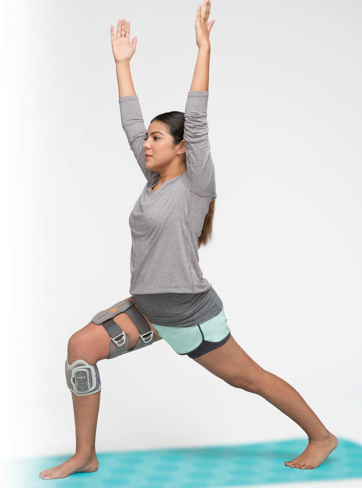

¿Qué es el L300 GO 2.0?
El Bioness L300 GO es un dispositivo de estimulación eléctrica funcional (FES) diseñado para ayudar a personas con problemas de movilidad a caminar de manera más estable y eficiente. Está especialmente indicado para personas que sufren de pie caído o tienen dificultades para levantar el pie al caminar debido a condiciones neurológicas como un accidente cerebrovascular, esclerosis múltiple, parálisis cerebral o lesiones en la médula espinal.
La versión más reciente del Bioness L300 GO es el L300 GO 2.0, lanzada en 2021. La actualización incluyó cambios significativos en la tecnología de estimulación, disponiendo de sensores avanzados de movimientos que mejoran la capacidad del dispositivo para ajustarse de forma automática a la marcha del usuario. Esta tecnología ajusta la estimulación eléctrica de manera más eficiente y fluida a los cambios de movimiento en tiempo real, proporcionando más opciones de estimulación y modos de operación para las necesidades individuales del usuario.
En cuanto al diseño del dispositivo, se resideñó para ser más compacto, ligero y ergómico, optimizado para un mayor confort y funcionalidad del uso diario.
Características
- 1. Estimulación Eléctrica Funcional (FES):
- Utiliza impulsos eléctricos para activar los músculos de la pierna, ayudando a mejorar la marcha y el equilibrio.
- 2. Tecnología Avanzada:
- Incluye sensores que detectan el movimiento, permitiendo que el dispositivo se ajuste automáticamente a la marcha del usuario.
- 3. Conectividad Mejorada:
- La versión 2.0 cuenta con opciones de conectividad que permiten la comunicación con otros dispositivos y el acceso a aplicaciones para el seguimiento del progreso.
- 4. Diseño Compacto y Liviano:
- El dispositivo es portátil y se puede usar en diferentes entornos, lo que lo hace conveniente para el uso diario.
- 5. Personalización:
- Se puede ajustar según las necesidades individuales del usuario, incluyendo configuraciones de estimulación y modos de operación.
- 6. Entrenamiento y rehabilitación:
- Ofrece programas específicos para ayudar en la rehabilitación y en el fortalecimiento muscular.
- 7. Uso fácil:
- El diseño intuitivo permite que los usuarios se familiaricen rápidamente con el dispositivo.
Beneficios
- Mejora de la Movilidad: Ayuda a los usuarios a caminar de manera más efectiva, aumentando su independencia
- Rehabilitación Activa: Facilita la participación en programas de rehabilitación, promoviendo el ejercicio y la actividad física.
- Calidad de Vida: Al mejorar la movilidad, puede aumentar la confianza y la calidad de vida de los usuarios.
¿Cómo colocarlo?
El L300 GO, es un dispositivo muy sencillo de colocar, en primer lugar, asegúrese de que la piel donde vas a colocar el brazalete esté limpia. A continuación, coloca el brazalete inferior envolviéndolo alrededor de la parte superior de la pantorrilla, justo debajo de la rodilla. El dispositivo tiene electrodos que se deben alinear correctamente con los músculos tibial anterior para que la estimulación eléctrica sea efectiva.
Ajusta la banda lo suficiente para que no se mueva, pero sin causar molestias. Una vez que el brazalete esté en su lugar, enciende la unidad de control. Esta se emparejará automáticamente con el brazalete si ya fue configurada anteriormente. Camina despacio para probar el dispositivo. Deberías sentir cómo la estimulación eléctrica activa los músculos de tu pierna, ayudando a levantar el pie en cada paso. Si el dispositivo no parece funcionar correctamente o sientes molestias, ajusta la posición de los electrodos o los niveles de estimulación.
Durante el uso, asegúrate de que el dispositivo esté bien ajustado y cómodo. Si experimentas irritación en la piel o cualquier tipo de molestia, detén el uso y ajusta el brazalete.
Una vez colocado y ajustado correctamente, el L300 GO debería trabajar automáticamente detectando tus movimientos y ayudando a levantar el pie mientras caminas. Puedes usarlo en diferentes actividades diarias, como caminar en interiores o exteriores.
Además, para aclarar algunas dudas, la página oficial de Bioness publicó una serie de vídeos de cómo aplicar el dispostivo.